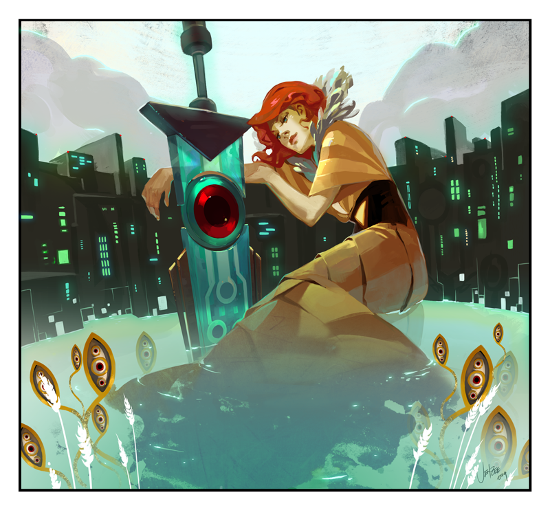

Buddy Holly /and The Crickets
Назад

Peggy Sue / Everyday (1957)
The “Chirping” Crickets (1957)
Think It Over / Fool’s Paradise (1958)
It’s So Easy / Lonesome Tears (1958)
Heartbeat / Well… All Right (1958)